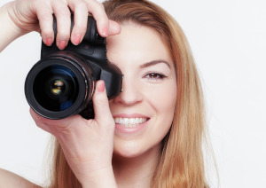
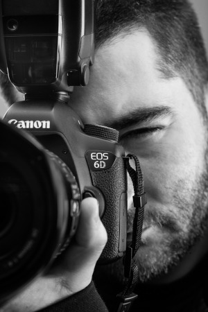

Emma Stone
Emma Stone is a talented photographer who has been capturing
moments through her lens since 2006. She attended the School of
Visual Arts in New York, where she majored in Photography and
Digital Imaging. Emma has a unique eye for storytelling,
especially in urban landscapes and portrait photography. Her
passion lies in photographing the unnoticed beauty of everyday
life, finding unique perspectives in bustling city scenes, and
creating emotional connections with her subjects. Over the years,
her work has been featured in numerous exhibitions, and she
continues to inspire with her dedication to capturing the
authentic and unfiltered side of life.

Kit Brown
Kit Brown is an accomplished photographer who began his journey
behind the camera in 2008. He honed his skills at the California
Institute of the Arts (CalArts), where he specialized in Fine Art
Photography. Kit has a particular passion for nature and wildlife
photography, finding serenity in the wilderness and documenting
the intricate details of landscapes and animal behavior. Known for
his patience and dedication, Kit often spends hours or even days
in a single location to capture the perfect shot. His work has
been showcased in galleries and publications worldwide, earning
him a reputation as one of the most dedicated nature photographers
of his generation.